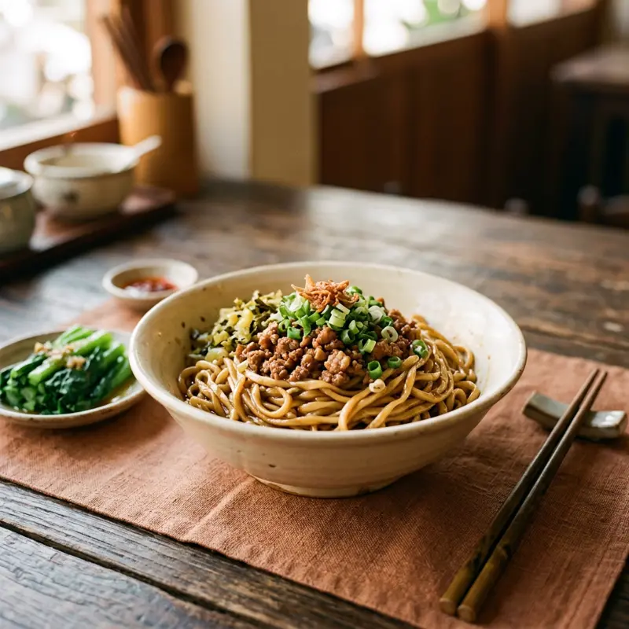

대만의 '국수'는 우육면과 별개로 훨씬 다양합니다. 타이난의 명물 탄쯔면(擔仔麵)은 새우 육수에 다진 고기 소스를 올린 한입 크기 국수이고, 이멘(意麵)·도삭면(刀削麵)처럼 중국 각지에서 건너온 스타일도 흔해요. 대부분 가격이 저렴해 로컬 식사로 부담 없이 즐기기 좋습니다.
무엇이 특별할까요?
01
탄쯔면
타이난 여행 중이라면 꼭 먹어봐야 할 명물. 새우알과 다진 고기 소스가 핵심이에요.
02
건면 vs 탕면
국물 없이 비벼먹는 건반면(乾拌麵)과 국물이 있는 탕면 중 선택 가능한 곳이 많아요.
03
1인 식사에 최적
대부분 1인분 기준 작은 그릇으로 나와서 여러 메뉴를 조금씩 시켜 먹기 좋아요.
이렇게 즐겨보세요
- ✓메뉴에 '乾' 자가 있으면 국물 없는 비빔면
- ✓완탕(餛飩)이나 계란을 추가 토핑으로 넣을 수 있는지 확인
- ✓저렴한 로컬 식당일수록 현금 결제만 되는 경우가 많음
- ✓매장마다 면 굵기가 달라 취향에 맞는 곳을 여러 번 시도해보기
Real spots
전체 화면 지도로 보기 →
여행자들이 등록한 진짜 맛집
이 카테고리에 실제로 등록된 맛집을 지역별로 모아봤어요. 새로 등록되면 여기에도 바로 반영돼요. 핀을 눌러 추천 투표도 남길 수 있어요.
📍타이베이
📍타이난
📍화롄
Join the map
지금 등록하기 →
나만의 맛집을 공유해주세요 🤫
여러분의 발견이 다른 여행자들에게 진짜 대만을 경험하게 해줍니다.